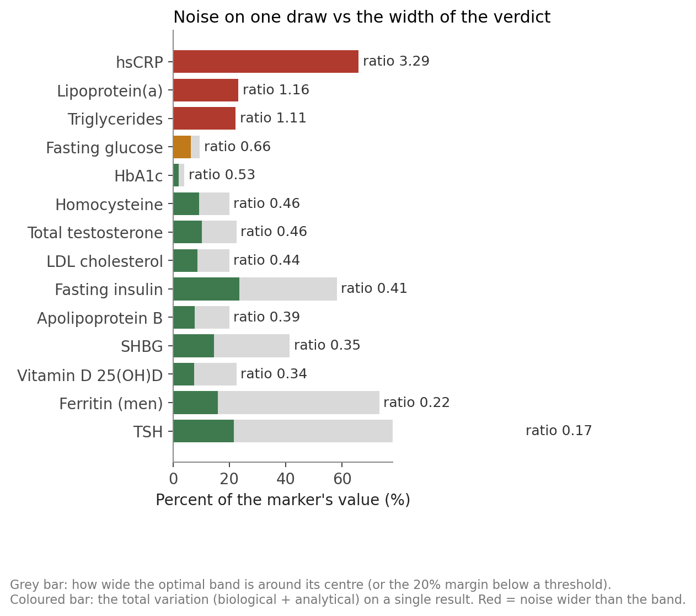
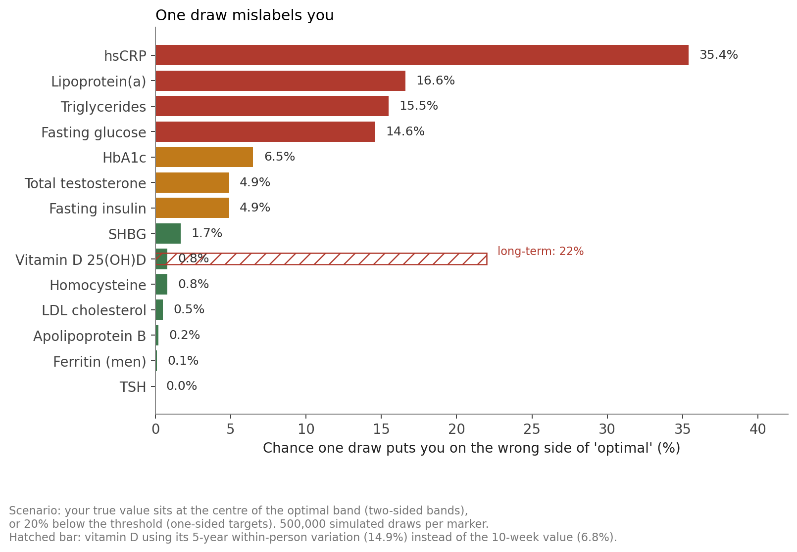
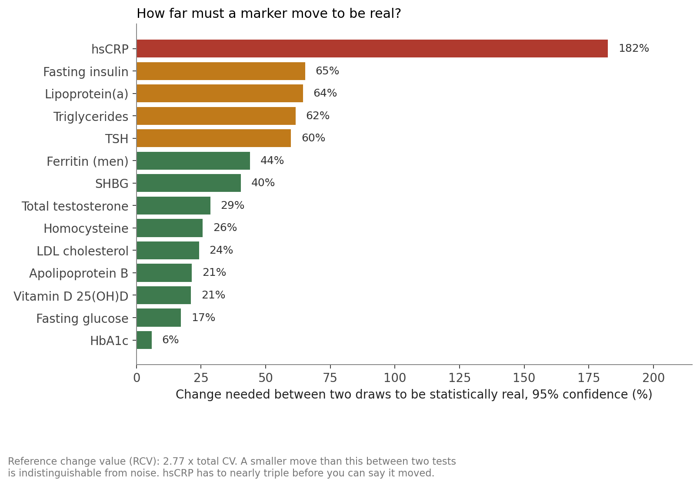
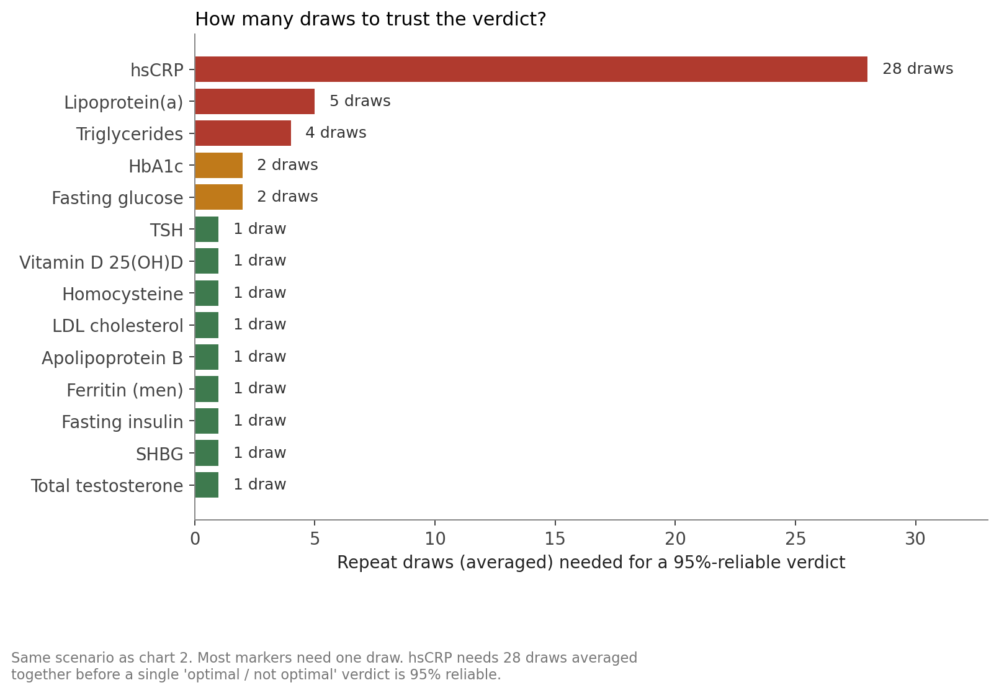

Build #80, 2026-11-27, biohacking. For each of 14 longevity-panel markers: the within-subject biological variation (CVi), the total noise on one draw (biological + analytical), the reference change value (how far two results must differ to be a real change), the noise-to-band ratio, the chance one draw mislabels a person who is dead-centre optimal, and how many repeat draws a 95%-reliable verdict would need. Full methods in the README.
Headline: hsCRP mislabels you 35.4% of the time and needs 28 draws for a reliable verdict. A person dead-centre optimal on all 14 markers still has a 68.5% chance that at least one comes back mislabelled.
| Marker | Optimal band | CVi | Total noise | RCV | Noise/band | Misclassified | Draws needed | Verdict |
|---|---|---|---|---|---|---|---|---|
| hsCRP | <0.5 mg/L | 58.9% | 65.85% | 182.4% | 3.29 | 35.4% | 28 | Unreliable |
| Lipoprotein(a) | <30 mg/dL | 20.8% | 23.26% | 64.4% | 1.16 | 16.6% | 5 | Unreliable |
| Triglycerides | <70 mg/dL | 19.9% | 22.25% | 61.6% | 1.11 | 15.5% | 4 | Unreliable |
| Fasting glucose | 75-90 mg/dL | 5.6% | 6.26% | 17.3% | 0.66 | 14.6% | 2 | Unreliable |
| HbA1c | 4.9-5.3 % | 1.9% | 2.12% | 5.9% | 0.53 | 6.5% | 2 | Shaky |
| Fasting insulin | 2-5 uIU/mL | 21.1% | 23.59% | 65.3% | 0.41 | 4.9% | 1 | Shaky |
| Total testosterone (men) | 600-900 ng/dL | 9.25% | 10.34% | 28.6% | 0.46 | 4.9% | 1 | Shaky |
| SHBG | 20-40 nmol/L | 13.05% | 14.59% | 40.4% | 0.35 | 1.7% | 1 | Reliable |
| Vitamin D 25(OH)D | 40-60 ng/mL | 6.8% | 7.6% | 21.1% | 0.34 | 0.8% | 1 | Reliable |
| Homocysteine | <8 umol/L | 8.3% | 9.28% | 25.7% | 0.46 | 0.8% | 1 | Reliable |
| LDL cholesterol | <100 mg/dL | 7.8% | 8.72% | 24.2% | 0.44 | 0.5% | 1 | Reliable |
| Apolipoprotein B | <80 mg/dL | 6.9% | 7.71% | 21.4% | 0.39 | 0.2% | 1 | Reliable |
| Ferritin (men) | 50-150 ng/mL | 14.2% | 15.88% | 44.0% | 0.22 | 0.1% | 1 | Reliable |
| TSH | 0.5-2.5 mIU/L | 19.3% | 21.58% | 59.8% | 0.17 | 0.0% | 1 | Reliable |
Vitamin D sensitivity: using its 5-year within-person variation (14.9%) instead of the 10-week value (6.8%), misclassification rises to 22.0% and 3 draws are needed. Scenario: true value at the band midpoint (two-sided bands) or 20% below the threshold (one-sided). 500,000 lognormal draws per marker, seed 20261127.



